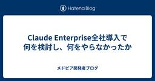
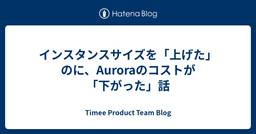
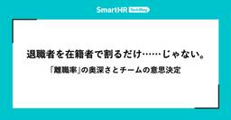
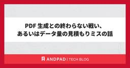
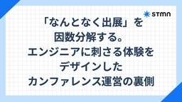
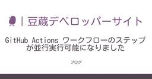
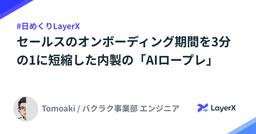

直近1週間の人気フィード
はてなブックマーク数を元に新着優先で並べ替え

GitHub Actions 認証情報ごとのリスクから読み解く、権限昇格パターンとその対策 108 GMO Flatt Security Blog
108 GMO Flatt Security Blog
はじめに こんにちは。GMO Flatt Security株式会社 セキュリティエンジニアの佐藤(@Nick_nick310)です。 本シリーズの前回記事では、GitHub Actionsに対する初期アクセスの手法と対策を解説しました。まだお読みでない方は、先に前回の記事をご覧いただくことをお勧めします。 GitHub Actionsのセキュリティを考える際、Script Injectionや信頼できないPull Requestのcheckoutといった初期アクセスに関わる問題が注目されることは少なくありません。しかし、実際の侵害を考えるうえでは、攻撃の入口だけでなく、その後にどのような権限昇…
2日前
Redeploying Fable 5 88 Anthropic News
On Friday, June 12, the US government applied export controls to our newest models, Claude Fable 5 and Claude Mythos 5. This required us to restrict access to foreign nationals, whether inside or outside the United States. Because the order took effect immediately and we had no reliable way to verify nationality in real-time, we suspended access to both models for all users.As of today, June 30, the export controls on Fable 5 and Mythos 5 have been lifted.Fable 5 will be available starting tomor
3日前

AWS Summit Japan 2026 参加レポート 28 Findy Tech Blog
こんにちは。ファインディのPlatform開発チーム（以降、SREチーム）でSREを担当している原（こうじゅん）、富田（@Cooking_ENG）、松本（@mozumasu）です。 2026年6月25日・26日に幕張メッセで開催された「AWS Summit Japan 2026」に、SREチームの3名で参加してきました。 aws.amazon.com それぞれが印象に残ったセッションを1本ずつ取り上げ、ファインディの現状と紐づけてお届けします。 スタートアップにAmazon EKSは早すぎる？ マルチプロダクト戦略を加速するPlatform Engineeringの実践 TBSテレビ「ラヴィッ…
7時間前
OIDC・Trusted Publishing でも残る、GitHub Actionsの認証情報の漏洩リスクと軽減策 15 GMO Flatt Security Blog
はじめに こんにちは。GMO Flatt Security株式会社 セキュリティエンジニアの佐藤(@Nick_nick310)と佐藤(@teppay_sec)です。 本シリーズでは全4回にわたり、GitHub Actionsのセキュリティについて体系的に解説します。まだお読みでない方は、Vol.1からご覧いただくことをお勧めします。 Vol.1: 相次ぐGitHub Actions 侵害から学ぶ、初期アクセス手法と開発者が知っておきたい対策 - GMO Flatt Security Blog Vol.2: GitHub Actions 認証情報ごとのリスクから読み解く、権限昇格パターンとその対…
2時間前

可視化と改善を合わせて考える ― メトリクスを起点にAI推進を成果へ繋げる回し方 17 Findy Tech Blog
こんにちは。ファインディ株式会社でテックリードをしている戸田です。 先日公開したFindy AI Meetup in Fukuoka #6のイベントレポートで、「AIで開発が速くなったはずなのに、レビューが詰まってトータルの生産性が変わらなかった」という話に触れました。 tech.findy.co.jp そこで今回は、そのレビュー詰まりを題材に、数値を見る → 仮説を立てる → 改善アクションを打つ → 結果を検証する というワンサイクルを1つの実例として紹介します。 Findy Team+とFindy AI+を組み合わせて、AI導入前後の数値を可視化し、そこから仮説を立て、改善アクションを打…
1日前
サプライチェーン攻撃に怯えたくないので、パッケージを「寝かせる」プロキシを自作した 29 エムスリーテックブログ
エムスリーテックブログ
こんにちは、セキュリティチームの坂梨です。 皆さん、ソフトウェアサプライチェーン攻撃対策はできていますか。 2025年の Shai-Hulud（大規模なnpmパッケージ侵害事件）以降、ソフトウェアサプライチェーン攻撃が話題に挙がる機会が増えました。特に今年3月末に発生した Trivy と axios の事件は大きく騒がれ、影響調査に追われた方も多いのではないでしょうか。 4月以降も lightning や TanStack などメジャーなライブラリが被害に遭っており、毎朝「さて今日は何が乗っ取られたのかな」とニュースを見る日々を過ごしています。 ライブラリが侵害されるたびに影響調査をするのは大…
3日前
OSCPにも役立つ！Kali Linux環境構築（tmux＆ログ管理）を解説 27 ラック・セキュリティごった煮ブログ
ラック・セキュリティごった煮ブログ
デジタルペンテスト部の渡邉です。 ２年ほど前にOSCP受験期を書かせていただき、今回が２回目の投稿となります。 前回の投稿からおよそ２年がたち、その間にOSEPにも合格できました。 まだまだ学ぶことは多いものの、当時に比べれば少しは成長できたのではないかと思います。 そこで今回は、当時OSCPを勉強し始めた時から今に至るまで、私が気に入っているkaliのセットアップの一部を紹介しようと思います。 zshrcの設定 私は普段、zshrcファイルに下記の設定を追記し、tmuxとロギングの設定を行っています。 # tmux if [ "$SHLVL" = "1" ] && [ -z "$TMUX" …
2日前
Claude CodeのスキルでSLO対応を自動化したらめちゃくちゃ楽になった 174 Uzabase for Engineers
Uzabase for Engineers
こんにちは。ソーシャル経済メディア「NewsPicks」のPlatform Engineeringチームの崔（ちぇ）です。 昨今、エンジニアのやるほとんどの仕事は「それはClaudeに」というものばかりになった気がします。調査に限らず実装やPR作成、なんならChrome拡張を使えば動作確認までさっとできちゃいます。GithubのCopilotレビューなんかも、かなりいいことに気づいてくれるので日々頼りにしています。 障害調査はどうでしょう？ AWS CloudWatch や New Relic といったo11y（observability）ツールのメトリクスを読んで、仮説を立てて、複数リポジト…
6日前

Claude Enterprise全社導入で何を検討し、何をやらなかったか 160 メドピア開発者ブログ
こんにちは。セキュリティエンジニア兼SREの侘美です。 2026年6月、メドピアではClaude Enterpriseの全社導入を完了しました。正社員・契約社員あわせて約130名にアカウントを配布しています。 今回の導入は、自分（セキュリティ）とコーポレートIT（社内のIT機器・SaaS管理を担当）で協力して設計・構築しました。セキュリティ方針やリスク評価は自分が担当し、SSO・SCIM設計やクライアント管理、コネクタ運用といった実装面の細かい検討・構築はコーポレートITのメンバーが中心になって進めています。 全社導入にあたっては「何を使えるようにするか」と同じくらい「何をやらないか」の判断が…
6日前
Introducing Claude Sonnet 5 21 Anthropic News
Claude Sonnet 5 is built to be the most agentic Sonnet model yet. It can make plans, use tools like browsers and terminals, and run autonomously at a level that, just a few months ago, required larger and more expensive models.For many developers, the agentic AI era began with Sonnet-class models: Claude Sonnet 3.5, 3.6, and 3.7 were the first models that showed impressive skills in coding and tool use. More recently, though, the clearest gains in agentic capabilities have been in our Opus-class
3日前

AI時代に、技術とドメインを越境するために試していること 20 LayerX エンジニアブログ
LayerX エンジニアブログ
こんにちは。「バクラク申請・経費精算」ソフトウェアエンジニアの@ussyです。 私はもともとAndroidとマネジメントを中心に経験してきた、どちらかというと専門特化寄りのエンジニアでした。これまでのキャリアや、なぜLayerXに入社したのかについては、以前入社エントリにも書きました。 note.com LayerXに入ってからは、Flutter、Vue、Goなど複数の技術スタックに触れながら、申請・経費精算の業務フローや、それを支える財務・会計の基礎理解も求められるようになりました。 正直、最初は全然わからないところからのスタートでした。目の前のコードも、業務用語も、レビューで飛び交う前提も…
2日前
Claude Science, an AI workbench for scientists, is now available 16 Anthropic News
AI has the potential to dramatically accelerate the pace of scientific discovery and the development of healthcare interventions. Since launching our efforts in the life sciences last fall, we’ve worked to improve our model capabilities, make connections to the scientific ecosystem via MCPs and skills, and launch partnerships in an effort to realize this potential.Today, we’re introducing our most significant expansion of these efforts: Claude Science, an AI workbench for scientists. Claude Scie
3日前

インスタンスサイズを「上げた」のに、Auroraのコストが「下がった」話 94 Timee Product Team Blog
はじめに こんにちは。プラットフォームエンジニアリングチームに所属している徳富(@yannKazu1)です。 「インスタンスサイズを上げたらコストが下がりました」と言うと、だいたい「？」という顔をされます。スペック上げたらお金かかるに決まってるだろ、と。自分もそう思っていたので気持ちはわかります。 この記事では、Amazon Aurora のReaderインスタンスを db.r7g.8xlarge から db.r7g.12xlarge にスケールアップした結果、I/Oコストが大幅に減り、トータルのAuroraコストがむしろ下がった話を書きます。バッファプールの仕組みと、判断の経緯もあわせて紹介…
6日前

退職者を在籍者で割るだけ……じゃない。「離職率」の奥深さとチームの意思決定 81 SmartHR Tech Blog
SmartHR Tech Blog
こんにちは、SmartHRのプロダクトエンジニアをしているceris、theo、kurihara、Yunaです。我々はHRアナリティクスというプロダクトの開発チームのメンバーです。 突然ですが皆さん、普段の機能開発に関連するビジネスドメインのキャッチアップはしていますか？ ヘンリー・フォードが自動車に対する顧客ニーズを「速い馬」と表現したのは有名ですが、顧客の本当に欲しがっているものを正確に捉え、価値として提供するのって難しいですよね。 HRアナリティクスの開発チームも、日々「速い馬」ではなく「車」やそれ以上の価値を提供できるように要望やヒアリングといった一次情報からの情報収集や関連するビジネ…
6日前
手動診断でしか見つからない脆弱性の話 67 エムティーアイ エンジニアリングブログ
エムティーアイ エンジニアリングブログ
※この記事は「エムティーアイ Blog Summer 2026」の 6/26 の記事です。 こんにちは、テクノロジー本部 Red Teamの石廣です。 今回は、Red Teamの強みでもある手動診断について、自動スキャンとの違いを交えながらお話しします。 目次 はじめに 自動スキャンが得意なこと 自動・手動・コードレビューの役割分担 自動スキャンが見落とすもの 1. ビジネスロジックの脆弱性 2. 複雑な IDOR（水平権限昇格） 3. 競合状態 4. 多段階の攻撃チェーン 5. 認証フローのバイパス 6. SSRF の複雑なケース 手動診断のアプローチ 手動診断にも限界はある まとめ 参考資…
6日前

AIにPull RequestのApprove権限を与えて数ヶ月、どのような効果があったか 63 株式会社ヘンリー エンジニアブログ
株式会社ヘンリーでソフトウェアエンジニアをしているwarabi(@warabi1062)です。 ヘンリーでは今年の1月から、一部のPull RequestでAIがレビューをする際にApproveを出す権限も与えています。 今回はAIにApproveを出させるようにした経緯や、約半年間の運用をしてみてどのような効果があったかをまとめます。 AI活用による実装速度の向上 今年の1月頃から、ヘンリーではClaudeCodeをより効果的に活用して実装の全自動化に力を入れてきました。その成果の一部として、IssueのIDを渡すだけで設計、実装、PR作成までをClaudeCodeが自動で行ってくれるSki…
6日前

Authorization Design as a User Story：権限設計を通して学ぶ、業務フローとユーザーストーリーのポイント 62 freee Developers Hub
freee Developers Hub
1. はじめに こんにちは、権限管理基盤チームで PdM をしている sentokun と申します。 私は基盤チームの立場でよくプロダクトチームから権限設計に関する相談を受けるのですが、実際にやっている内容に立ち返ると、それは業務フローとユーザーストーリーの整理に通じると感じています。 この記事では、権限設計という複雑そうなタスクの「よくあるパターン」を通して、業務フローとユーザーストーリーの重要性について共有します。 TL;DR 権限設計を考える際には、以下の2ステップが必要です。 業務フローとユーザーストーリーを整理する（2章） 「誰が、どんな立場で、何をするか」を具体化する 3つの深掘り…
6日前

Device Hub の使い方 - WWDC26 要約 3 stmn tech blog
はじめに みなさん、こんにちは! 初めましての方は、初めまして! プロダクト開発部で TUNAG の iOS を開発しています、とんとんぼです。 この記事は、WWDC26 のセッション動画である「Device Hub を最大限に活用する方法」をまとめた記事になります。 WWDC（Worldwide Developers Conference）は、Apple が毎年開催する開発者向けのカンファレンスです。 新しい OS や開発ツールがここで発表され、2026 年の開催が WWDC26 にあたります。 Device Hub は WWDC26 で初登場し、iOS エンジニアだけでなく、iOS アプリ…
1日前

PDF 生成との終わらない戦い、あるいはデータ量の見積もりミスの話 8 ANDPAD Tech Blog
ANDPAD Tech Blog
はじめに こんにちは。リアーキテクティングチームの髙橋と申します。 この記事では、アンドパッドで PDF 生成のロジックを独立したサービスとして切り出そうと試み、さまざまな技術的問題にぶつかり、アプローチを考え直すという判断に至るまでの顛末をお話しします。 つまるところ、初期の設計考慮漏れによる失敗談です。ですが、各レイヤーで何が起きていたのかを1つずつ突き止めていく過程は、Web アプリケーションがどんな部品の上に乗って動いているのかを改めて学ぶ良い機会になりました。どなたかの参考になれば幸いです。 教訓 最初に、今回得られた教訓を箇条書きにします。 こうしてまとめると初歩的なことではあるの…
2日前

「なんとなく出展」を徹底的に因数分解する。エンジニアに刺さる体験をデザインしたカンファレンス運営の裏側 4 stmn tech blog
みなさん、こんにちは☀️ スタメンプロダクト開発部のねぎちゃんです🌷 本日は、5月に開催されたフロントエンドカンファレンス名古屋2026とTSKaigi2026のカンファレンス運営を振り返るレポートをお届けいたします！ 【カンファレンス概要】 フロントエンドカンファレンス名古屋2026 開催日：2026年5月9日 場所：ウィンク愛知 フロントエンドカンファレンス名古屋2026 TSKaigi2026 開催日：2026年5月22日〜5月23日 場所：ベルサール羽田空港 TSKaigi2026 エンジニアがカンファレンス運営をするとなると、どうしてもメイン業務は日々の開発になるため、ブースコンテン…
2日前
社内申請が行われるたびにプロンプトがどんどん育つAIエージェントを支えるDevin 37 Blog on DeNA Engineering
Blog on DeNA Engineering
はじめに こんにちは。IT本部 AI・データ戦略統括部 データ基盤部 AIジャーニー推進グループで、エンジニアをしている小野寺です。私たちのチームは、ふだんの開発に AI 駆動開発をどんどん組み込もうとしています。スクラムのスプリントに Devin を「もう一人のメンバー」として組み入れ、外部ツールの利用申請への記入といった定型作業を少しずつ AI に任せてきました。今回紹介するのは、その申請エージェントのプロンプトを AI 自身に毎週改善させる取り組みです。
7日前

GitHub Actions ワークフローのステップが並行実行可能になりました 35 豆蔵デベロッパーサイト
はじめに#先日、GitHub Actions ワークフローで background 機能が実装され、単一のワークフロー内でステップを並行で実行可能になったことが発表されました...
5日前

dbt のメタデータを OKF でエージェントに渡すと、Agentic Analytics の精度は上がるのか 6 弁護士ドットコム株式会社 Creators’ blog
弁護士ドットコム株式会社 Creators’ blog
こんにちは。データ本部 AI 技術開発部の冨田です。 全社データ基盤「ODIN」連載の第3回 Agentic Analytics — AI に分析を任せる時代の基盤とコンテキストレイヤー では、AI に分析を任せる時代には「コンテキストレイヤー」が決定的に重要になる、というお話をしました。そのコンテキストレイヤーにとってキーとなるかもしれない技術が、最近 OKF（Open Knowledge Format） という形で発表されました。 この記事では、私たちがこれまで dbt で整備してきたメタデータを OKF に変換することで、ビジネスユーザーを想定した Claude Desktop からの …
3日前
同じAWS Summit、でも去年とは全然違った — 自社開発1年目の視点 3 RAKUS Developers Blog | ラクス エンジニアブログ
RAKUS Developers Blog | ラクス エンジニアブログ
「勉強のため」から「持ち帰るため」に変わった アウトカムを意識するようになった 将来の自分たちが楽になるかどうかで見ている レベル300のセッションが「ちょうどいい」と感じた AI一色、そしてフィジカルAIの存在感 まとめ
3日前

前例踏襲だけじゃない！立ち上げ期のサービスで最適な構成変更に踏み切ったアプローチ 16 ANDPAD Tech Blog
こんにちは。 サービスプラットフォーム部 SRE チームの谷合です。 普段はメガネやキャンプギア収集と、毎日のビールを楽しみに生きています。 前回は入社後意識的にやっていたボール拾いからトイルの改善に発展させた話を書きました。 tech.andpad.co.jp 今回はタイトルの通り、新規サービスの構成をアーリーフェーズで見直し、前例踏襲ではなく最適な構成に移行した取り組みをご紹介します。 序文 リリースの改善 ネットワーク構成の最適化 さいごに We are hiring! 序文 サービスが産声を上げた直後から数ヶ月のフェーズ。それは、システムが実際にユーザーに使われ始め、初期のアーキテクチ…
6日前

Embedding 安定化で検索リランキングのCold start problemを解決：LINEバイトでの適用事例紹介 15LINEヤフー Tech Blog (LY Corporation Tech Blog
LINEヤフーの技術カンファレンス「Tech-Verse 2026」の公式記事です。こんにちは。LINEヤフーで機械学習プラットフォームを開発している木原健太と袁逸凡です。今回は、LINEバイトの検索...
6日前

AWS Summit Japan 2026 の Builder Community Lounge でチョークトークをしてきました 3 サーバーワークスエンジニアブログ
サーバーワークスエンジニアブログ
AWS Summit Japan 2026 の Builder Community Lounge でチョークトークに登壇しました。アクセスキーの不正利用対策をテーマに、流出経路や脱却できない理由、多層防御の重要性について参加者とディスカッションした内容の振り返りと、私個人として得た学びをまとめました。
4日前

シャドーAI対策は「禁止」より「運用で回す」が効く ‐Cloudflareを例に考える、可視化・定義・制御の3ステップ‐ 3 IIJ Engineers Blog
IIJ Engineers Blog
今回はIIJのグループ会社である、IIJグローバルソリューションズの木城 良太さんからの寄稿です。 近年話題となっている”シャドーAI”について、「リスクだから禁止しよう」では...
5日前

AI時代のエンジニア組織のかたち 3 Repro Tech Blog
Repro Tech Blog
はじめに こんにちは。Repro Booster のプロダクトマネージャーのEdward Fox（@edwardkenfox）です。 私たちのチームが開発しているプロダクト Repro Booster は、ありがたいことに事業・製品ともに順調な成長を続けており、導入企業数も右肩上がりで増えています。 今回の記事では、Repro Boosterの開発チームがこれまでどのような目的のもとで組織を変化させてきたのか、その歴史を振り返りつつ、現在進めている新しい組織的なチャレンジについて共有したいと思います。特に「技術を使って事業に貢献したい」と考えているエンジニアの方に、何かしらヒントとなるような情…
6日前

セールスのオンボーディング期間を3分の1に短縮した内製の「AIロープレ」#日めくりLayerX 3 LayerX エンジニアブログ
このnoteは、「#日めくりLayerX」と題して発信するブログリレーの2026年6月25日の記事として投稿しています。 はじめに こんにちは、バクラク事業部でソフトウェアエンジニアをしているTomoakiです。 新しい仲間が増えることは大きな力になりますが、同時に「いかに組織の拡大スピードを落とさずに、全員を最速で即戦力化するか」という課題に直面します。 この記事では、バクラクのセールスメンバー向けオンボーディングにおける課題を、内製した「AIロープレ」システムでどのように解決し、オンボーディング期間を約1/3に短縮したかについて共有します。 組織拡大とプロダクト増加に伴うオンボーディングの…
7日前